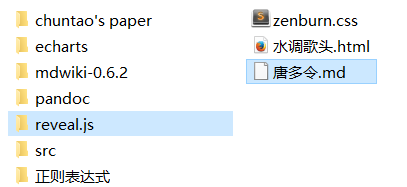

本文旨在提供一份使用markdown生成Slide(网页PPT)的简明手册，系爬虫俱乐部内部使用
0. 确认本机配置
- 下载revealjs文件夹并确认文件夹名称为
reveal.js，revealjs是一个javascript包，markdown在生成html时，通过引入该脚本，实现动态切换效果 - 下载pandoc并安装。
- msi安装包会将自己自动添加至环境变量中
- pandoc是由Haskell语言编写的格式文档转换工具，在cmd中运行，不存在可视化页面
- 在这里，我们使用pandoc将写好的markdown文本转换成html
- 为什么一定要使用pandoc转换？————因为pandoc可以在转换时引入revealjs脚本
1.迅速开始
在reveal.js 同一级目录 （注意，不是reveal.js文件夹内）下，新建你的第一份slide稿件唐多令.md

在该文件中如此写下
|
|
在这个markdown中，我们只使用了一级标题和二级标题的语法，现在打开cmd，转进当前有这个markdown文件和reveal.js文件夹的目录下
输入命令 pandoc -t revealjs -s 唐多令.md -o 唐多令.html
可以得到如下效果
2.pandoc 参数详解
基本参数介绍
- 最简单的pandoc命令
pandoc 唐多令.md- 该命令将
唐多令.md文档（默认为markdown格式）转换成html文件（默认输出类型为html） - pandoc转换文档时，后缀名为txt的文件默认当作markdown文件处理
- 该命令将
- -o FILENAME 指定输出文件名
pandoc 唐多令.md -o 唐多令.html，如果不指定该项，则内容直接在命令行中输出 - -r/w SUFFIX 指定输入输出文件格式
pandoc -r html -w html 唐多令.md -o 唐多令.html - 输入文件可以是网页链接
pandoc -f html -t markdown http://www.fsf.org - -s 生成独立的，有
<head>和<footer>的完整网页，而不仅仅是由md转过来的网页片段 - -A FILENAME 引入 footer html，完善网页
- -c FILENAME 引入css(层叠样式表)文件，让页面更漂亮
- 生成一份简单的独立的引入pandoc.css样式表的网页
pandoc -s -c pandoc.css 唐多令.md -o 唐多令.html
点击这里领取pandoc.css
revealjs相关参数介绍
在pandoc命令中，可以指定关于revealjs的相关选项
-trevealjs 在转换中引入reveal.js，将html渲染成有动态效果的网页，如果要引入revealjs脚本，此项必填-V theme=THEMENAME在转换中引入css主题，用于更改显示样式，主题列表可以在reveal.js/css/theme文件夹中找到，填入相应名字即可-V transition=METHOD在转换中引入页面的切换效果，切换效果有- none
- fade
- slide
- convex
- concave
- zoom
-V option:boolen配置一些全局变量，这些变量会直接写入reveal.js的初始配置中- -V history:true 给Slide加入锚点功能，revealjs会将所有一级标题和二级标题增添锚点
- -V center:false 内容由上到下排列，默认为center:true 内容会居中心排列
- 更多参数请访问Github
--self-contained将本次所引入的全部CSS和JS脚本写入文件中，只需要传送这一个html文件，打开就是最后的效果。- 若markdown中添加了图片，则图片会以base64编码形式写入源代码中
- 若命令中引入了其它CSS，则会将相关内容写入源代码中
- iframe框架没有类似效果，依旧需要准备好原网页在相应路径中
--section-divs表示大标题囊括小标题，反映到html上，就是父级section包含着子级section，当你的markdown中使用了一级标题及二级标题，则revealjs会将一级标题作为横轴页面，二级标题作为纵轴页面，产生二维页面
现在我们重新生成一份二维的Slide
在cmd中输入命令pandoc -t revealjs -s 唐多令.md -o 唐多令.html --section-divs -V center:false
3.改进——了解一点点CSS
在我们已经学会了基本的生成Slide的方法后，不可避免地我们要做一些视觉上的改进。
比如当单页内容太少时，我们希望让它的字体更大一些
直接进入html中更改
|
|
改为
|
|
即：直接在html代码中添加标签的style，更改该标签的文字字体大小
修改引用的CSS配置
唐多令.html使用的是默认CSS文件(black.css)，打开CSS文件，找到如下部分
|
|
改为
|
|
通过以上两种方法，可以在得到html文件后进一步修改和调整
学习资料参考
- CSS入门 http://www.w3school.com.cn/css/index.asp
- pandoc参数手册 http://www.pandoc.org/
- revealjs http://lab.hakim.se/reveal-js/
- markdown语法一览 http://www.appinn.com/markdown/